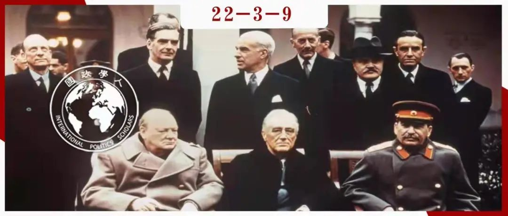

收录于合集

从“我”到“我们”
——作为集体行动的战争与领导操纵的作用
作者： Anthony C. Lopez，华盛顿州立大学政治、哲学与公共事务学院副教授，主要研究领域为政治心理学与国际关系。
编译： 池佳曈（国政学人编译员，吉林大学行政学院）
来源： Lopez, A. C. (2020). Making ‘my’problem ‘our’problem: Warfare as collective action, and the role of leader manipulation. The Leadership Quarterly , 31(2), 101294.

导读
文章指出理解领导者在群体冲突中的作用必须解决两个问题：第一，领导者在解决战争中的集体行动问题上扮演何种角色。第二，领导者与追随者对战争的价值或必要性存在分歧的后果是什么。由于领导者在战争背景下面临的诸多动态在结构上与领导者和政治团体面临的问题类似，作者采用演化的方法解决这些问题。
在最基本的层面上，采取集体行动涉及两个问题：首先，个人必须自己决定是否支持或参与联合侵略（coalitional aggression）；其次，个人必须决定是否以及如何操纵他人在此方面的决定。对于领导者来说，后者尤为重要。 领导者面临着如何将“我”的问题转化为“我们”的挑战。作者认为，解决方法是让领导者操纵冲突的框架，通过将攻击行为重构为防御行为，从而由自利行为过渡为有益群体的行为。
文章分为四个部分。首先，作者概述了关于政治行为的演化方法。第二，作者探讨了战争中所面临的集体行动问题的本质，以及个人用来解决这些问题的手段。第三，作者建立一套领导者利用进攻- 防御的区分操纵国内观众的条件。第四，作者通过研究概念上的内容与外延完善这一理论范围。总之，这一理论为理解领导者为何、如何以及何时操纵观众以促进其私人利益提供了分析背景。
摘要
战争是关乎集体行动的问题，群体通常坚持从领导者提供的迅速而一致的行动中获益。越来越多的证据表明，领导力在一定程度上是为了解决这种集体行动问题。尽管领导者在群体中有共同利益，但也可能以牺牲群体利益为代价谋求私利。根据社会心理学和演化心理学的见解，文章解释了领导者如何解决战争中的集体行动问题，以及当其自身利益与群体利益不一致时如何操纵观众的偏好。具体而言，当领导人预期从外国侵略中获得巨大的私利、但在国内面临公众的强烈抵抗时，领导人会将冲突重构（misframe）为防御性的，而不是攻击性的。文章通过演化分析解释了为什么领导者专门利用这个框架，并确定了冲突框架中最有可能被利用的具体方面。
编译
一
政治的一种演化方法
将演化理论应用于心理机制有助于研究政治行为领域，在这些领域中个人和群体面临的问题反映了人类在演化过程中反复出现的挑战。演化心理学家认为大脑中的行为调节机制是由自然选择设计的，用来产生在祖先的环境中具有适应性的行为，以应对在环境中主要的挑战。此外，由于自然选择的作用是将繁殖成功的特征固定在一个种群中，它们往往是典型的或普遍的。
由于心理适应是针对祖先的环境而做出的，而这种环境已经发生了实质性的改变，这些系统的动机和行为输出在现代环境中可能显得不合理。虽然“有限理性”（bounded rationality）经常试图在理性选择框架内调和持续存在的非理性，但有时非理性行为是在生态假设基础上运行的机制的产物，而这些假设在现代环境中已不再有效。
将这些观点应用于战争的动态可以帮助识别存在的心理适应，并调节参与联合暴力的倾向，这为理解领导人如何在联合阵线中运作提供了基础。因此，作者简要地概述了战争中的集体行动问题，然后研究领导者在解决这些问题中所扮演的独特角色。
二
作为集体行动的战争 ****
关于领导力的争论建立于两个重要假设之上：首先，战争构成了祖先的选择压力；其次，选择压力的特征一定程度上导致了集体行动问题。
1. 祖先对于联合侵略的选择
联合侵略的代价有多高？这种风险在祖先的生命中频率有多高？就其代价而言，人类的暴力尽管在许多方面与黑猩猩的群体类似，但参与者所招致的风险程度截然不同，是否参与的决定会导致重大的繁殖后果。学者普遍认为联合侵略反复出现，并代表一系列针对自然选择的适应性问题，该适应必须有效地将环境线索与特定动机和行为输出相匹配，结果将提高在祖先环境中的平均存活率。因此，下一个任务是概述这些适应性相关的环境线索是什么，以及心理适应性将如何调节根据这些特征产生的动机和行为输出。
2. 战争中的集体行动问题
群体之间争斗的不可避免因素是集体行动问题，因此必须研究其演化机制。当三个及以上的个体之间对成本及成果分配提出竞争时，集体行动问题就会出现，联合侵略是集体行动的一个例子。鉴于联合侵略的观点，如何描述可能普遍存在的集体行动问题？托比（Tooby）和科斯米德斯（Cosmides）概述了“战争的风险契约”（risk contract of war），探索演化的联盟心理学为解决联合侵略的特定问题所具备的特征。这一分析产生两个问题：第一，个人面对特定适应性问题决定是否参与集体行动。第二，个人面临的适应性问题如何操纵他人决定以维持或阻碍联合行动的实施。
3. 参与：加入与否？
在什么条件下，人们会倾向于选择参与暴力？由此产生的适应性将呈现一系列心理具象化的条件策略（psychologically-instantiated conditional strategies），这些策略在战时指导个人直觉，并对环境具有适应性。因为操纵的机制应该不断跟踪和重新校准其他变量，所以调节个人决定是否参与的适应性机制是必要的起点。
4. 执行：直接操纵与间接操纵
除了调节自己决定参与的机制之外，战争中的集体行动假定存在操纵他人偏好的机制。由于在联盟对抗的情况下，自然选择具有积极监测和调节相对数量的心理机制，个体可以通过积极诱导和消极诱导两种直接途径为联盟行动招募劳动力。
（1）消极的诱导
研究表明，在存在公共产品的环境中，惩罚与战争是促成持续合作的必要因素。惩罚性情绪的心理“大棒”是强大的，表现形式多种多样，如道德责难，社会排斥，体罚，地位和荣誉的降低。
（2）积极的诱导
**
**
自然选择可能会形成一系列心理上的“胡萝卜”，以激励参与和减少搭便车现象。这些激励情绪包括感激、友谊、对地位和荣誉的感知，以及其他形式的奖励。
因此，强制执行的问题代表了联盟内的个人或个人群体通过积极或消极的诱因来操纵他人的偏好，从而加入和维持群体间的暴力。招募劳动力用于联合暴力是适应性问题，是成功联合暴力的核心。在大致确定解决集体行动问题的工具之后，必须考虑领导人为什么、如何使用这些工具应对挑战。
三
领导操纵（leadership manipulation）的作用 ****
领导力是个人特征和环境线索（社会、经济、制度等）之间相互作用的偶然产物， 领导者在团队中的角色具有两种特质：1）议程设定权力，即建立或明确团队目标；2）协调权力，即塑造团队成员针对目标采取行动的动机和期望 。在此概念的基础上，本节研究领导者是如何在战争中解决集体行动的强制执行问题。
1. 有争议的框架：使“我”的问题成为“我们”的
在任何给定的冲突场景中，群体内人口参与战争意愿的差异将是衡量领导者成功的直接指标。总的来说，领导人可以通过两种途径来操纵国内观众的偏好。 第一，领导人可以直接针对偏好进行明确的威胁或承诺奖励。第二，领导者也可以改变受众对共同威胁或机遇的感知方式。
领导者将如何重新定义对于联盟机会或威胁的感知方式？一个有效的策略是将进攻性攻击重构为防御性。一般来说，人们更倾向于支持防御性而非进攻性战争。成功的防御能够击退入侵者并阻止其进入领土和资源，这将给整个群体带来包括消除威胁、保存资源在内的好处。然而，进攻性攻击更有可能使得大量私有化资源不对称积累。由于这种区别，公众预期从成功的防御性进攻中获得更大的利益。
事实上，无论是在现代还是古代背景下，当战争是为了保护自己的群体而不是为了发动侵略时，个人通常会更支持战争。那么，为什么搭便车的诱惑不会破坏对抗他者攻击的努力？对这个问题的研究阐明了为何领导者将进攻性的攻击行为塑造为防御性如此容易。
（1）解释防御的内生动机
人们更愿意参与防御被视为最低限度的公益问题，必须承认以下几点：首先，受到攻击并不总是无条件地激发集体团结。事实上，在许多情况下分散或逃跑是很有用的。其次，群体附属关系的关键功能是解决大量关乎存续的挑战，因此当外群体威胁出现时就无条件地放弃社会网络是不可能的。最后，受到攻击而不是发起攻击的本质解决了目标和协调方面的争议。
以上结果表明，自然选择在人类身上形成了一个旨在克服防御中的搭便车问题的激励系统，因为促进集体防御的平均收益超过了短期内叛逃的个人理性收益。 一般来说，人类在性格上相对倾向于支持防御而怀疑进攻。成功的进攻可能确实会给整个群体带来积极的外部性，例如提升地位或对未来威胁的威慑。但与防御不同，进攻性攻击的收益可视为一种俱乐部产品。 在进攻和防守中都存在搭便车问题，但只有后一种情况下自然选择才会形成参与的动机偏向。
（2）领导操纵的假设
当领导人预料到会从敌对行动的发起中获得巨大的私人利益，而又无法通过积极和消极的诱导直接获得公众支持时，他们就会通过重新构建战略环境本身来间接地操纵偏好。因此，明确这一行为如何发生至关重要。
2. 有争议的框架的性质
**
**
领导者具体如何将进攻行为重构为防御行为？领导操纵的一个主要挑战是使观众相信防御性战争的属性切实存在，包括攻击的时间、对群体内外边界的感知、群体或国家的地位和声望，领导人通过操纵这些属性来把握特定冲突作为防御的整体框架。
（1）进攻的时机
衡量防御或是发起暴力的最可靠的指标是另一方率先出击。由于很难确定敌人是否发动了攻击，因而更常见的做法是先发制人或预防性的暴力。如果能使观众相信战争不可避免，那么问题就变成了何时使用武力。领导人可以通过使观众相信敌人无法和解、威慑不起作用来强调防御的必要性。当领导人提及历史上的暴力或不公正时，更容易调动观众的情绪。
（2）群体边界或“延伸防御”
操纵冲突框架的第二种方式是改变政治团体和领土的边界。如果最初对于敌人的攻击被视为存在第三方干预，且第三方在其政治团体中起到突出作用，干预可能被视为群体内成员防御的延伸，这与延伸威慑（extended deterrence）的概念并列。
（3）国家地位
群体地位和声望可以被看作是一种公共利益，领导者和群体成员会努力维护这些因素。当干预的理由与国家声望、地位或意识形态联系在一起时，即使是机会主义的侵略也能服务于公共利益。
总而言之， 领导者将攻击性攻击塑造为防御性有三种途径，包括操纵攻击的时机、假装与国外的第三方具备民族或意识形态上的友爱、根据国家地位和声望发动敌对行动 。时间、扩展防御和国家地位并非相互排斥，而是为我们更清楚地检查战争中进攻和防御框架之间实际和感知的差异提供模板。
四
警告、扩展与反驳：探索理论范围 ****
本节作者关注以下问题：界定领导人利益的问题；魅力、信号和领导的制度背景；确定与否定的证据；进攻的盲目性（offense blindness）与自我欺骗（self-deception）问题。
1. 领导利益的类型
尽管重要的私人利益可能会导致领导者将攻击性攻击重构为防御性攻击，但何种利益可能触发其欺骗是一个实证问题。研究表明，所讨论的资源类型可能会对个人争取资源的方式产生影响，因此将资源的性质视为模型的内生因素将是有用的。另一部分在于个体间差异，个体差异的理论广泛而深刻，作者主要研究领导操纵中的性别差异。在面对预期的私人利益时，男性比女性更倾向于寻求将进攻重构为防御来解决领导者的招募问题。
2. 魅力、信号与制度背景
魅力型领导者特别善于“表述愿景”，唤起共同的、神圣的价值观，并使其成为解决协调问题的焦点。 除了共同的和神圣的价值观之外，这些愿景还可能确定、加强和阐述宗教和世俗信仰以及激励协调行动的理想主义。当选的领导者在建立情感激励方面可能更有效，而被任命的领导人更多地依赖物质激励。同样，威权政权的领导人可能有更大的能力在物质上奖励和惩罚期望的行为。
3. 进攻的盲目性与自我欺骗的问题
在一般情况下确实存在将进攻误认为防御的倾向，而领导者利益的存在对错误描述的动机起不了独立的作用。 相反，可能存在一些先天的动机偏见，使个体相信无论如何己方群体都不太可能是攻击者，作者将其称为进攻盲目性。
首先，如果人们在试图控制资源和夺取资源时的战斗方式不同，那么进攻行动可能需要参与者更多的支持，领导者的机会主义对外接触就会受到阻碍。第二，经验并未证明领导者总是寻求将侵略塑造为防御性的，现代国际体系中对于进攻冒险主义的禁忌逐渐普及，这一趋势是否不可逆转的争议应运而生。事实上，“进攻盲目性”与针对进攻性侵略本身的国际规范结合起来时尤其强大，但这两种现象在分析上是截然不同的。最后，如果主要假设是正确的，它很可能通过自我欺骗无意识地运作。考虑到群体间冲突的巨大风险，出于私利的领导人可能会通过自我欺骗来操纵冲突框架。
4. 确定与否定的证据
在这些案例中，团体在干预问题上的不团结导致有私人利益的领导人参与间接操纵。文章指出必须证明领导者有明确的私人利益、领导者不能有效地依赖刺激的直接手段、沿着战争框架的维度对冲突场景进行重构。此外，这些元素必须通过已建立的方法相互关联。
对此类案例的研究应注意，期待从对外侵略中获取私人利益的领导者面临着主要观众的反对，但他们的论点不会操纵干预的防御性框架。在劳工招募问题的背景下，除了私人利益之外的其他变量也可能引发对战争的错误描述。
五
结论
由于人类只要在联盟中生活和竞争，问题就会在演化过程中反复出现并且对物种具有适应性意义，因此最好将战争作为一系列集体行动问题来研究。因此，从演化的角度可以为领导者的偏好提供生物学上有效的解释。虽然领导者能够以各种方式促进集体行动，但领导者并不仅仅是集体愿望的被动工具。因此，研究当领导者的利益与群体的利益不一致时所出现的问题是很重要的。
当领导者准备从发动侵略中获益，但联盟的其他成员并不期望如此时，领导者可以通过直接或间接的社会和政治操纵来获得对外国侵略的支持。 直接措施包括领导者对观众的威胁和承诺，间接措施包括试图操纵观众对局势本身的看法。特别是当直接措施失败时，那些期望从外国干预中获得私人利益、面临巨大的劳动力招募挑战的领导人将越来越可能通过将发动侵略视为防御性行为来寻求间接操纵。
战争从根本上说是集体行动问题，通过研究群体间冲突的心理可以更清楚地了解领导者如何解决这一问题，特别是当他们的利益可能与公共利益不一致时。将演化理论应用于领导能力的难题，为理解领导能力为什么、何时以及如何塑造战争的原因和后果提供了有效的生态学基础。
词汇整理
有限理性 **bounded rationality
**
延伸威慑 extended deterrence
自我欺骗 self-deception
审校 | 杨璐源 黎开朗
排版 | 陆霜滢 王佳怡
文章观点不代表本平台观点，本平台评译分享的文章均出于专业学习之用, 不以任何盈利为目的，内容主要呈现对原文的介绍，原文内容请通过各高校购买的数据库自行下载。

国政学人
支持学术公益与知识传播
微信扫一扫赞赏作者 __赞赏
已喜欢，对作者说句悄悄话
取消 __
发送给作者
发送
最多40字，当前共字
上一页 1/3 下一页
长按二维码向我转账
支持学术公益与知识传播
受苹果公司新规定影响，微信 iOS 版的赞赏功能被关闭，可通过二维码转账支持公众号。